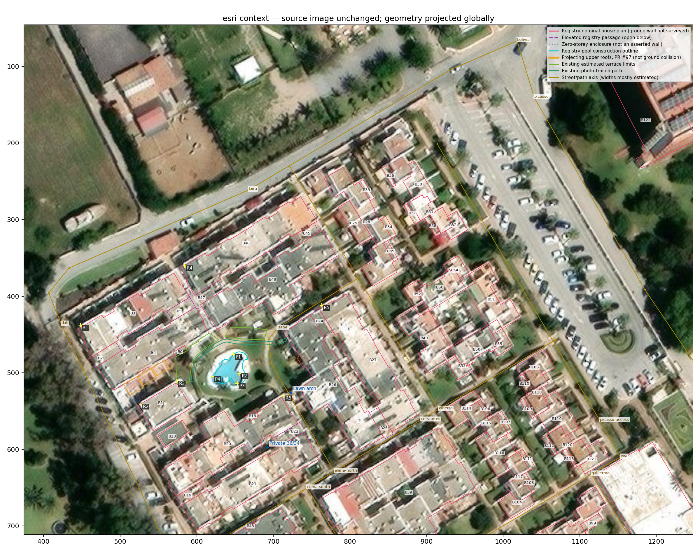
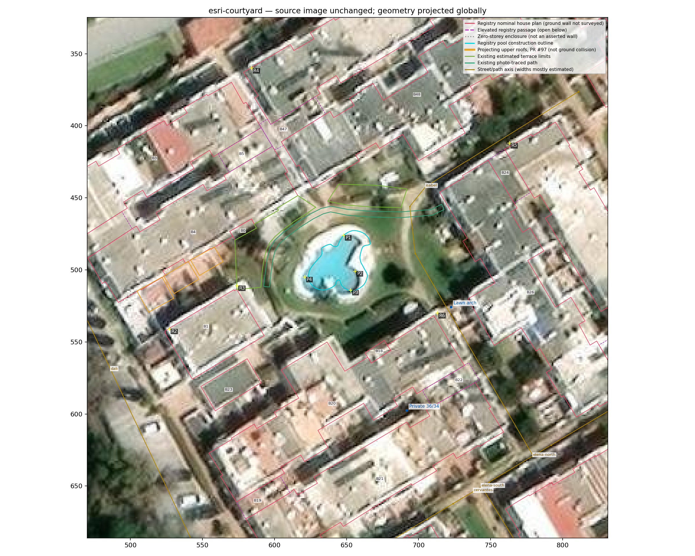
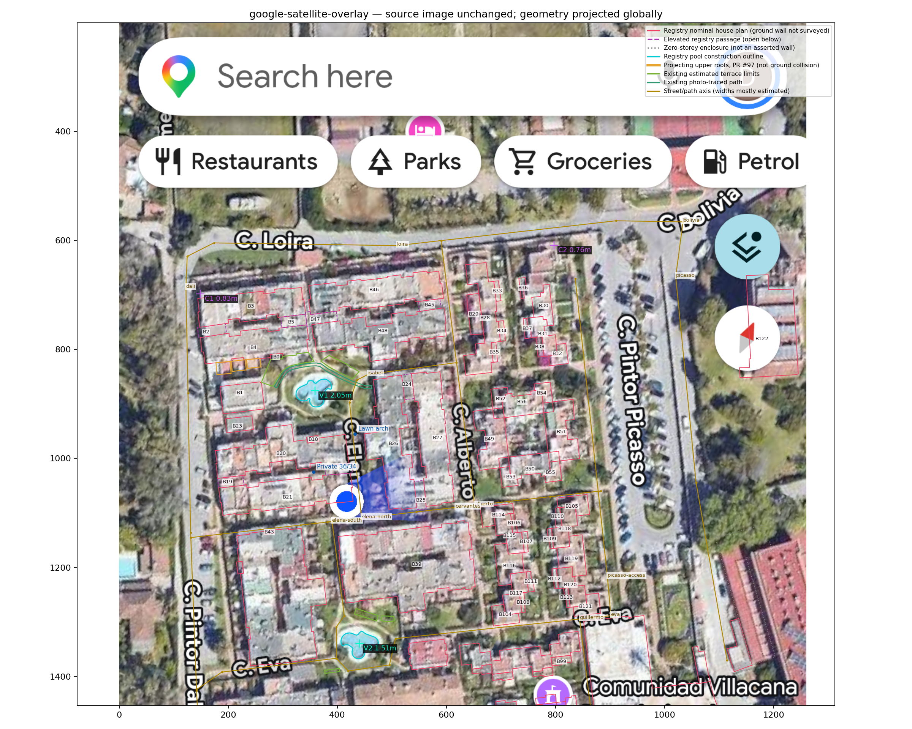
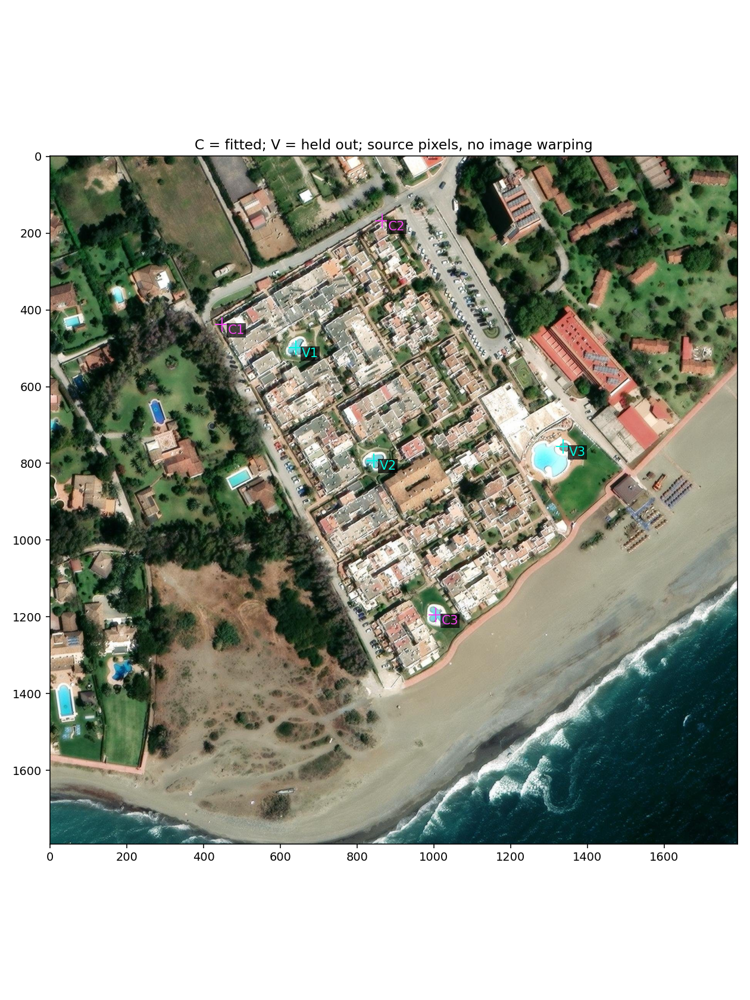
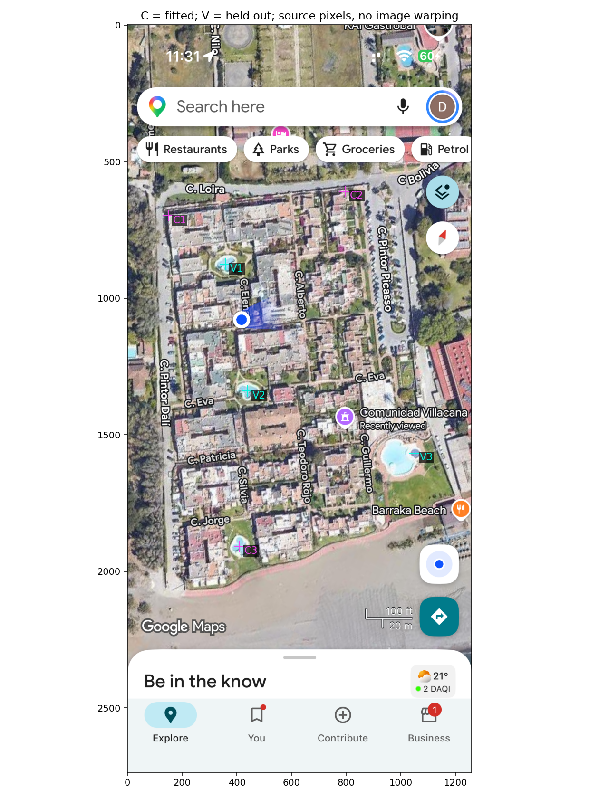

Baseline e043c0e. C1–C3 fitted once globally; V1–V3 held out. No imagery is warped locally. Roof projections are not ground walls. See the public audit report for uncertainty and the full photo assessment.





Photo/source comparability pairs
Original Google satellite and standard; north-pool contact sheet. These originals remain private.